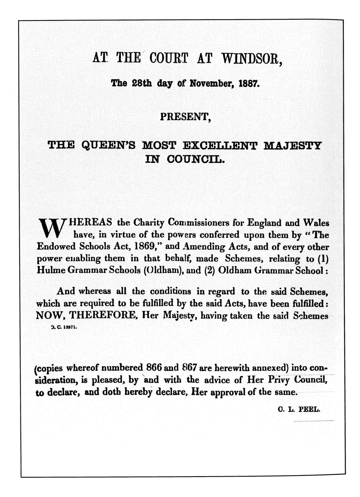
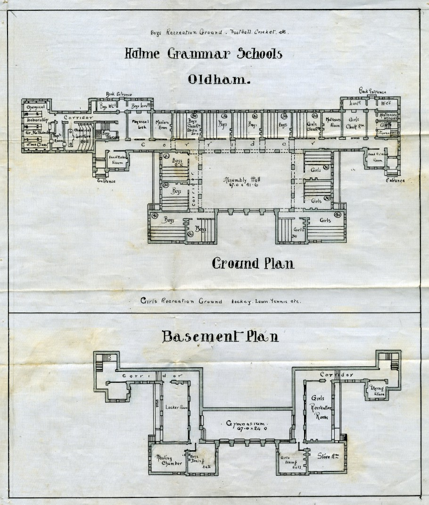
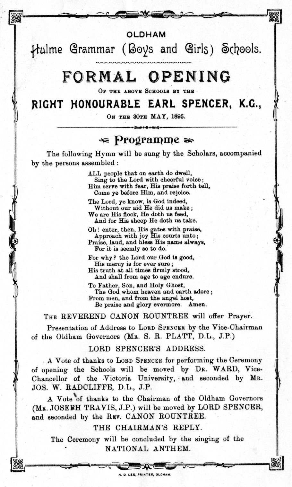
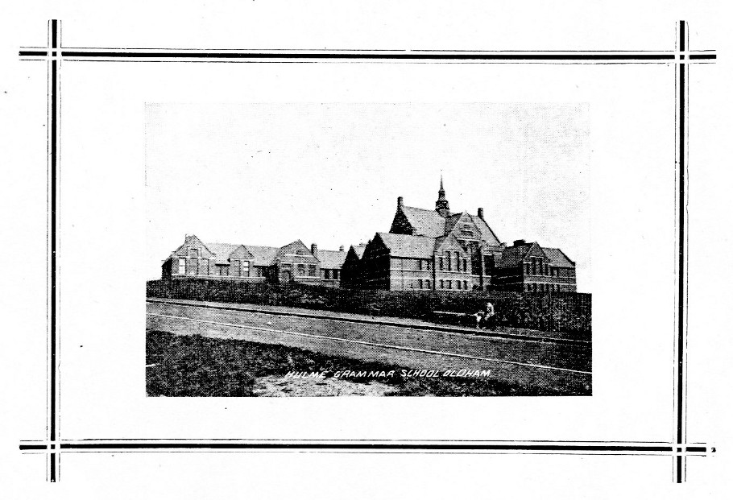
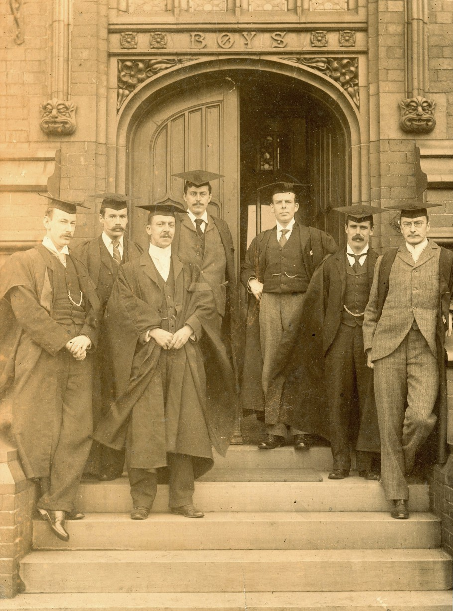
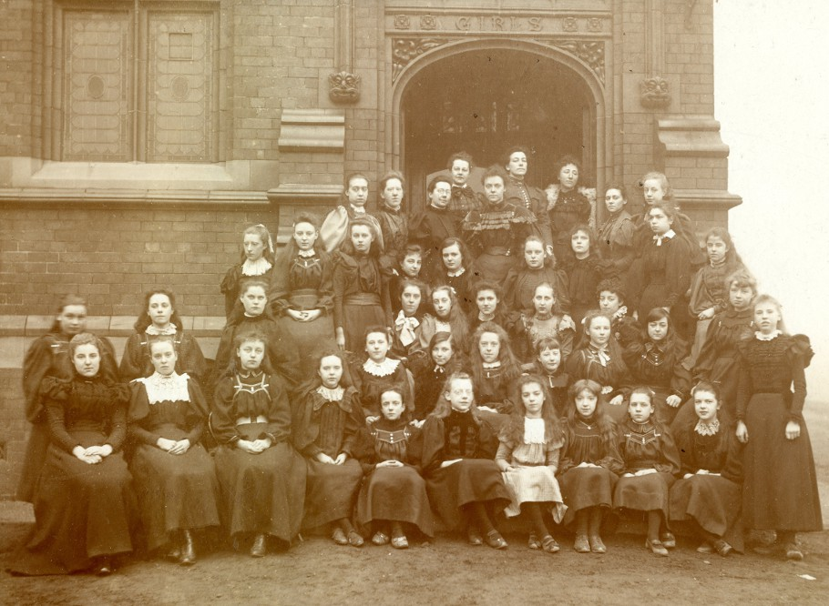

1st May will mark the 120th anniversary of Oldham Hulme Grammar School. On that day in 1895 the doors opened to the first pupils, 48 boys and 28 girls between the ages of eight and sixteen. A further 74 boys and 58 girls joined the school in the following academic year.
Since the demise of Oldham's original grammar school in the centre of town in 1869 due to the dilapidated state of the 250-year-old building, the apathy of the trustees and the desire of the Corporation to redevelop that part of the town centre, advanced education was no longer available in Oldham. The land and buildings were sold to the Corporation for £1010.
However, owing to the determination of certain 'men of vision' in Oldham and the shrewd investments made by the trustees of the old school, grammar school education in Oldham did have a future. The 1869 Endowed Schools Act which provided for the use of obsolete charities for educational purposes, and the Elementary Education Act of 1870 under which school boards were formed in every municipal borough, inspired Mr Joseph Travis JP and Mr Hesketh Booth, Clerk to the Oldham Borough Justices, to investigate the possibility of founding a new grammar school for Oldham. It took 25 years for their plans to come to fruition but they persisted in their claim for funding from the Hulme Trust, drawing up the scheme in 1884 and obtaining approval from Her Majesty the Queen in Council on 28th November 1887.
Approval for the Hulme Trust to fund the Scheme for the Oldham Hulme Grammar School.
The will of William Hulme of Kersley (1631 - 1691) made provision for income from his estates to be available for the benefit of schools in the area. The legal requirements set out in the will were met, allowing the application to be successful, and the continuity between the Oldham Grammar School and the new Hulme Grammar School (Oldham) to be effectively established.
The first Governors' meeting took place in Oldham Town Hall on 27th December 1887. The Rev William Thomas Jones MA, Rector of Prestwich was appointed Chairman with Mr Joseph Travis JP as Vice-Chairman (Travis became Chairman from 1889 until his untimely death in 1896). A sites committee was appointed to find a suitable location for the new school but it was not until 1893 that the Charity Commissioners gave permission for building to start on the eight-acre site on Chamber Road. This land had been purchased from the Chamber Hall Estate; a further area of 8544 square yards adjoining the site was given to the school by Miss Dorothy Lees. Architect John Whittaker Firth was appointed to design the building, and the foundation stone was laid on 16th September 1893 by Mr Joseph Travis, on unanimous agreement of the board of governors.
At this time, Chamber Road was little more than a track leading from Ashton Road to the Chamber Hall Estate. The new school would be situated in open countryside; Windsor Road, Frederick Street and College Road did not yet exist.

1879 Ordnance Survey Map of the area.
Although the original plan had been to build two schools, one for boys and one for girls, it was found to be more economically viable to have a single building with shared facilities such as the main hall, although the boys and girls would receive their tuition in separate classrooms. The original plans show eight classrooms designated for boys, plus a 'chemical laboratory' and 'chemical lecture hall' (situated in the area which is now the main entrance, reception and offices), and five classrooms for girls. Each classroom originally had a tiered floor (as found in a lecture theatre) and open fireplaces. Most of these features remained in place until the 1960s. The building was illuminated by gas. The basement would contain the heating chamber, a gymnasium to be used by both schools, plus separate dining rooms and recreation rooms for the boys and girls. Separate entrances were provided; the girls' entrance is still in use today but the boys' entrance, while still visible from outside, is no longer utilised due to changes to that part of the building.
Floorplan of the original building.
The official opening ceremony took place on 30th May; the Right Honourable Earl Spencer KG, Chancellor of the Victoria University, Manchester, performed the opening, after which the Oldham Chronicle praised the finished building: ".... placed upon the southern brow of the hill on which Oldham stands. It is beautiful for situation, and will long form a landmark for miles of surrounding country. Its truly handsome hall and its delightful corridors and classrooms are charming embodiments of the beneficent spirit which directed the mind of William Hulme in making his bequest."
Opening Ceremony Programme.
Susan Lees, daughter of a banker who lived at Chamber Hall, recalled her delight at finding that the new building on Chamber Road was to be a grammar school, not only for boys but also for girls. She persuaded her father to allow her to attend the school where she remained for seven years. She later married an 'old-boy' of the school.
The children who arrived at school for the first time on Wednesday 1st May 1895 were greeted by their headmaster Mr Samuel Ogden Andrew, a local man in his late twenties who had been educated at Manchester Grammar School and Oriel College, Oxford, where he had gained 1st class honours in Classics, and their headmistress Miss Alice Foxall (also in her late twenties), born in London and educated at North London Collegiate School for Girls and London University where she was awarded an MA in Philosophy. They were supported by a small staff of well qualified graduate teachers and together set the foundations for the school's ethos and academic excellence, values still held by today's school. Subjects offered to pupils alongside the 'three Rs' (Reading, Writing and Arithmetic) included English Grammar, Composition and Literature, Mathematics, Latin and Greek, French and German, Geography and History, Religious Instruction, Natural Science, Drawing, Drill and Gymnastics, and Vocal Music.
Photograph of the new school taken before 1901. Chamber Road is in the foreground.
While many of the children lived within walking distance of school (two miles was considered a reasonable distance for a child to walk to school a century ago), some came from further afield such as Shaw, Ashton and the Saddleworth villages, being transported by rail from the 25 stations within the school's catchment area to Oldham's stations, Clegg Street, Central and Werneth, all of which were about three-quarters of a mile from school.
The school had dining rooms for both boys and girls and although we do not know if a meal was provided at this time, it would have been common practice for children, where possible, to return home for their midday meal. The children were not initially required to wear a uniform; the girls in the photograph below appear to be wearing their 'Sunday Best' and not their everyday clothes.
Masters of the Boy's School, circa 1896.
Headmaster S O Andrew is third from the right.
Both the boys and the girls were encouraged in extra-curricular activities ranging from the debating societies and literary club to the production of the school magazines The Oldham Hulmeian and The Hulme Victorian. For the girls, regular Saturday trips with members of staff to local places of interest or into the Saddleworth countryside were positively anticipated. Most of the children attending Oldham Hulme Grammar School in the early years had previously been privately educated because little beyond an elementary education had been available in Oldham. Many of the girls had been educated at home.
Mistresses of the Girl's School with some of the girls, circa 1895. Headmistress Alice Foxall is fourth from the left, second row from the back.
One local girl who took full advantage of her opportunity to study under a scholarship to Oldham Hulme Grammar School was Nellie Neild; after leaving school she spent three years at Lady Margaret Hall, Oxford, gaining a first class degree in the Final Honours School of Modern History which, had she been a man, would have qualified her for the MA degree. However, she was later awarded the London MA in History and after teaching in London and at the Sherborne School for Girls she became headmistress of Bury Grammar School for Girls. She recalled her time at school as "such a happy and successful time".
For both boys and girls, attending Oldham Hulme Grammar School provided opportunities for a successful future which, had the school not existed, many would never have been able to achieve or even aspire to.
Further information on some of the boys and girls who attended Oldham Hulme Grammar School over one hundred years ago can be found in our WW1 Project.
Ordnance Survey Map: Oldham Local Studies.
All other documents and photographs: Oldham Hulme Grammar School Archives.